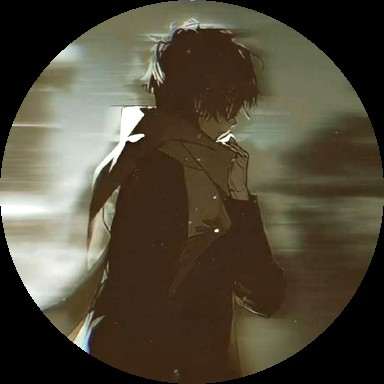

Một miner RandomX với phí dev nhìn thấy được và tắt được, cái pool trả cho nó, proxy cho cả farm, và trang web ghép mọi thứ lại.
Lab phần mềm độc lập
Độc lập.
Mở theo thiết kế.
MoLik Labs là nơi mình phát hành những phần mềm mình dùng thật: một miner RandomX, một phòng thí nghiệm Rubik, một app học một-file. Mã nguồn mở, không theo dõi, không quảng cáo — làm xong việc rồi tránh đường.
Ít ồn hơn. Nhiều chủ đích hơn.
3 dự án · 4.600 commit · 14 sao01 / Dự án chọn lọc
Làm để dùng.
Danh sách ngắn, vì danh sách vốn ngắn. Tất cả đều công khai.
Phòng thí nghiệm 3×3: engine C với BFS và IDA*, binding Python, mười ba phương pháp đo cạnh nhau trên cùng scramble, và trang bảng sinh ra từ benchmark.
Một môi trường học một-file: lộ trình Vật lí 9 52 buổi, ôn tập cách quãng, sổ điểm, kế hoạch tuần và đấu trường pixel. Offline mặc định, vì học không cần tài khoản.
02 / Con người
Một lab một người, có chủ đích.
Giữ nhỏ để mọi quyết định có người chịu trách nhiệm, và code giữ được sự thật thà.
01

Nguyễn Gia Khải
Người sáng lập · Bảo trì · C, C++, Zig, Python, web
github.com/NggKhaiz ↗02
Đóng góp
Không tuyển người, không thuê ngoài, không áp lực roadmap. Pull request và báo lỗi thật thì luôn được chào.
github.com/MoLik-Labs ↗03 / Liên hệ
Một đường thẳng.
Câu hỏi, báo lỗi, hay một thứ đáng làm cùng — một hộp thư, một người đọc.
nggkhaiz@proton.me
Issue và pull request cũng về cùng một chỗ.
Nơi khác
Trang này
04 / Chi tiết nhỏ
Rõ ràng mặc định.
Cam kết viết ra, không có chữ nhỏ giả làm chữ lớn.
01 Một lab cá nhân, phi thương mại +
MoLik Labs là tổ chức mã nguồn mở cá nhân, không phải công ty và không đăng ký kinh doanh. Không có gì ở đây được kiếm tiền: không quảng cáo, không gói trả phí, không bán dữ liệu.
Dự án được phát hành để học, để dùng và để review. Việc bảo trì theo thời gian rảnh của một người, nên không có cam kết uptime.
02 Không thu thập dữ liệu +
Các trang này không có analytics, không có tracker quảng cáo, không telemetry. Không cookie nào được đặt để theo dõi, font phục vụ từ chính domain này.
Hai tuỳ chọn được lưu trong localStorage của trình duyệt: giao diện sáng/tối và ngôn ngữ. Xoá dữ liệu trang là xoá cả hai. Link sang GitHub dẫn bạn ra khỏi trang này, theo chính sách của họ.
03 Nội dung bên thứ ba và ghi công +
Các dự án là độc lập, không liên kết, không được bảo trợ và không đại diện cho bất kỳ nền tảng hay dịch vụ bên thứ ba nào trừ khi nói rõ.
Chỗ nào dựng trên việc của người khác thì trang dự án nói rõ. Ví dụ MOLIK_WINLIK là bản dựng Sophia Script cho Windows của farag2 theo giấy phép MIT, giữ nguyên phần ghi công.
04 Giấy phép mã nguồn +
Mã nguồn được công khai để review minh bạch. Quyền dùng, sửa, phân phối mỗi dự án chỉ theo LICENSE trong repo đó — GPL-3.0 cho ZMRIG, MIT cho STUDY-SITE và MOLIK_WINLIK, Apache-2.0 cho PUBLIC_FILE.
Đọc file LICENSE trước khi phân phối lại. Thư viện bên thứ ba giữ giấy phép và yêu cầu ghi công riêng. Font ở đây là Inter, Inter Tight và JetBrains Mono, đều theo SIL Open Font License 1.1.